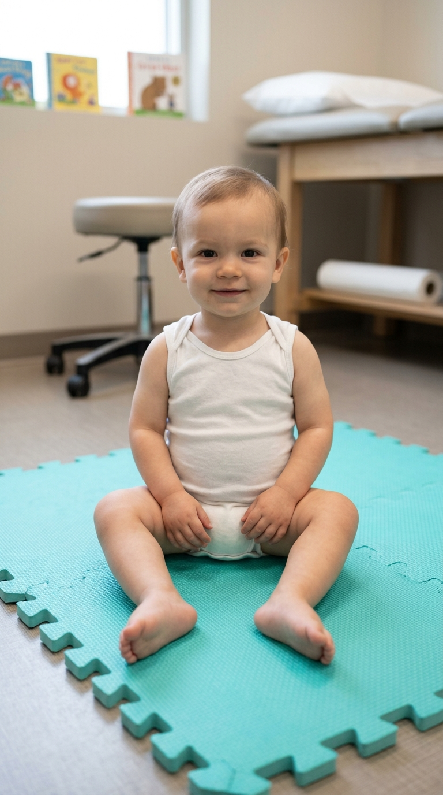
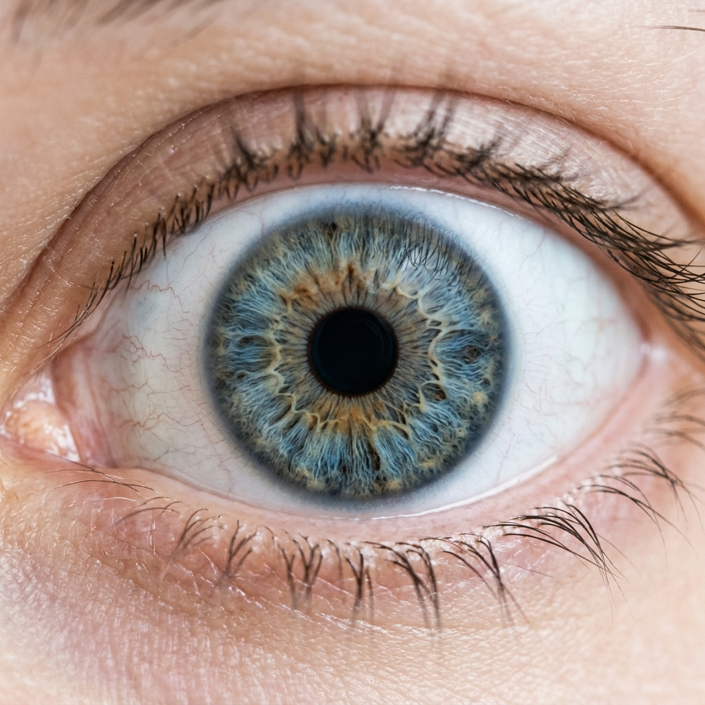

Child Health Screening Platform
Multi-modal triage across The 4Ds: Defects at birth, Deficiencies, Diseases, and Developmental delays.
Learn how client-side MediaPipe landmark extraction maps to WHO/pediatric baselines.
Browser-Side 33 Landmarks
Video streams never touch the server. MediaPipe Tasks Vision runs entirely inside your browser, extracting 33 3D skeletal coordinates and head yaw metrics at 10 FPS over 10–15 seconds (~50 KB JSON payload).
Invariant Biomechanical Normalization
The server subtracts Mid-Hip $H_{mid} = (P_{23} + P_{24})/2$ and scales coordinates by Torso Length $L_{torso} = \|S_{mid} - H_{mid}\|_2$, eliminating camera distance and child size variations.
The 4Ds Clinical Mapping
Analyzes Gait Symmetry Index (GSI), Spine Tilt ($\theta_{spine}$), Knee-Ankle alignment, FFT Tremor frequencies, and Auditory Orienting Latency mapped to non-diagnostic Green/Yellow/Red triage flags.
Real-Time Biomechanical Readings
Live landmark angles and metrics updated continuously at 10 FPS.
📋 Guided Protocol
Position the camera 2.5–3 meters away. Ensure the child's entire body from head to feet is visible inside the frame.
Defects at Birth
Club foot, hip dysplasia, neural tube/spine asymmetry.
Deficiencies
Rickets lower-limb bowing, severe stunting alignment.
Diseases
Cerebral palsy spasticity, neuromuscular dystrophies, tremors.
Developmental Delays
Gross motor milestones, autism orienting latency & gaze.
📊 Calculated Metrics Summary
📐 Biomechanical Formula Explanations & Clinical Baselines
⚠️ Clinical Observations & Triage Flags
Skin Condition Screening
Upload a dermatological image to screen for Acne, Eczema, or Normal patterns.
Condition Probabilities (%)
Confidence Share
Eye Health Screening
Upload an eye photo to screen for Cataract, Conjunctivitis, Eyelid, Normal, or Uveitis.
Condition Probabilities (%)
Confidence Share
📖 Pediatric Screening Capture Tutorial & Standards
Clinical best practices for capturing optimal video and photos to achieve accurate algorithmic triage.
How to Screen Sitting Posture

Infants should sit steadily without support. Inability to maintain upright sitting by 9–10 months is an early gross motor delay flag (D4).
Observe the vertical line from mid-pelvis to neck. A persistent lateral lean > 12° suggests coronal asymmetry; > 22° flags structural scoliosis or axial hypotonia (D1/D3).
Hold smartphone in 9:16 portrait mode at child chest height, 1.8m away. Infant seated on a firm floor mat (unsupported, no pillows or adult hands holding).
Sleeveless top and bare legs allow accurate visibility of shoulder height symmetry, spinal curvature, and core pelvic stability.
Testing in a high chair or with adult hands supporting the back obscures natural core stability and invalidates trunk hypotonia detection.
How to Capture Child Walking
Place camera 2.5–3 meters away at waist/chest level so the child from head to ankles stays visible.
Measures left vs. right stride length and knee flexion cycles. Flags asymmetric limps, cerebral palsy hemiplegia, or hip dysplasia (D1/D3).
Wear fitted shorts so knee and ankle joints are unhindered by loose garments or blankets.
Holding camera from high adult eye level or cutting off the child's feet prevents lower-limb biomechanics.
How to Capture Standing Alignment
Compares inter-condylar (knee) distance vs. inter-malleolar (ankle) distance. Detects Genu Varum (bow legs) or Genu Valgum (knock knees) (D2).
Child stands facing camera with feet naturally close (3–5 cm). Camera placed low at knee height (40–50 cm) in portrait mode, 2m away.
Bulky diapers or socks covering the malleoli ankle bones or knees prevent accurate ratio computation.
How to Screen Static Balance
Tracks postural adjustments in Romberg stance over 10–12 seconds. FFT checks for high-frequency cerebellar tremor (> 3 Hz) (D3).
Flat, non-slip floor. Arms down by sides, feet together. Camera stationary at child navel level.
How to Screen Audio-Visual Orienting
Child looks away (~25° yaw). At 3.0s an audio cue sounds. Time until head turns toward camera indicates prompt auditory orientation (D4).
Measures sustained gaze fixation toward examiner/camera. Also screens for upper-limb flapping stereotypies (1.5–3.5 Hz).
How to Capture Skin Photos

Hold camera perpendicular (90°) to the rash, 15–25 cm away, with lesion filling the central frame.
Tap screen to ensure razor-sharp focus on skin texture. Use diffused daylight; avoid harsh flash glare.
Blurry macro focus, cast shadows, or yellowish night lamps alter erythema color detection.
How to Capture Eye Photos

Have child look straight forward into camera with eye wide open to reveal sclera, cornea, and iris.
NEVER use direct bright flash in a dark room. Soft side illumination prevents painful corneal reflections.
Motion blur from squinting or white flash washout obscuring cataract / conjunctival redness.